This page is hosted on AFS file server space, which is being shut down on November 13, 2018.
If you are seeing this message, your service provider needs to take steps now.
Visit
afs.unc.edu for more information.
This page provides information
about entering data into Excel.
Select the cell you want
to enter data in, and start typing. Then lock in entry by
-
Pressing the Enter key
-
Selecting a different cell with
the mouse,
or
-
Using the arrow keys on your
keyboard to exit the cell.
You can't do a lot of things
while Excel thinks you're in the process of typing.
Excel gives you some visual
clues that you're in the process of typing.

If you see these symbols
in your formula bar, Excel thinks you're editing.
Entering Words
Just type them.
Don't worry if the cell isn't
wide enough to show your entire entry. It might look cut off, or
it might spill over into the adjacent cell. Your formula bar shows
what you've actually typed.
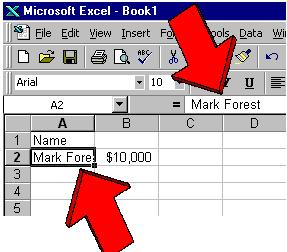
Entering numbers
Type numbers without any
dollar signs or commas.
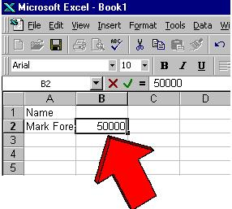
Although Excel is pretty
forgiving if you forget, it's a good habit to get into. Other software
programs may not recognize numbers that contain these special characters.
They'll think they're words.
Don't worry if the number
appears as a bunch of hashmarks (#):
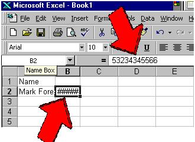
Excel is saying, "I don't
have enough room to show you all of the digits you've requested.
I can't figure out whether to chop off the first or the last. So
I'll show you garbage instead." You'll widen the column to show all
the digits. Again, your formula bar will show what you've typed.
If it's a very big or very
small number, you might see something like this instead
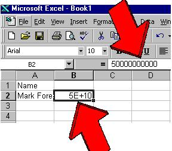
because scientific notation
takes up lots less space. Again, don't worry. You can fix this
later.
Fixing Mistakes
-
Start
over while you're editing: If
you realize halfway through that you made a mistake and want to start over,
press the Esc key in the upper left corner
of your keyboard. This will take you out of editing mode without
locking in your change.
-
Correct
a few characters: Press the Backspace
key (not the left-arrow key) on your keyboard to wipe out the characters
or numbers to the left of your cursor. Press the Del
key to wipe out characters to the right of your cursor.
-
Correct
an entry after you've locked it in: Select
the cell with the mistake. To retype it, just start typing.
Excel will start you over.
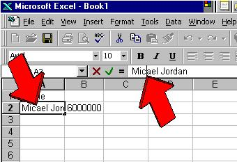
If you want to correct a
few characters, press the F2 key on your keyboard (at the very top), or
click in the formula bar where the mistake is:
-
Changing
column widths: As
with most things in Excel, there are a number of ways to change a column
width. One is to use the mouse to drag the border where you want
it.
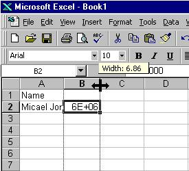
Another
way is to use the menu. The Format,
Column, Autofit
selection will increase your column to a width that displays the contents
of the active cell.
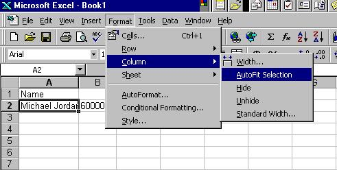
-
Inserting
columns and rows: To insert
a blank column in your spreadsheet and adjust all of your formulas, select
the column to the right of the one you want. Then use the Insert,
Columns menu
item to move everything to the right.
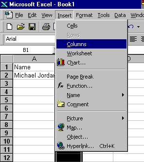
Insert
a row by selecting the row below your new one, and use the same menu item,
inserting Rows instead.
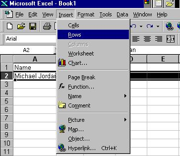
-
Deleting
columns and rows: To delete
a column, select it, then select the menu item, Edit,
Delete.
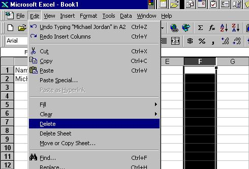
This
isn't the same thing as pressing the Del
key, and isn't the same thing as using the menu item Edit,
Clear.
Use the same process to delete a row after selecting it.

-
Locking
in headings: As your spreadsheets
grow, you'll want to see the first row or two whenever you page through
your data, preserving their headings. The same thing happens as you
create more and more columns -- you'll want to see a column to show you
what's in each row.
Select
the cell immediately below the row you want to lock in. Select the
cell immediately to the right of the column you want to lock in.
So for a combination, you'd select cell B2 to lock down row 1 and column
A.
Choose
the menu item Window,
Freeze Panes
to lock in the heading.
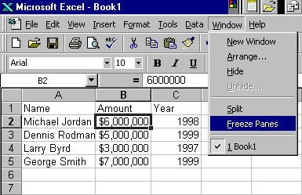
Choose
it again to unfreeze the panes and start over if you need to.
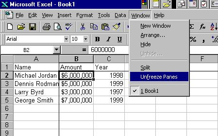
Syllabus |
Basics | Selecting
| Tips | Formulas
| Tutorials
Return to Excel
Index Page